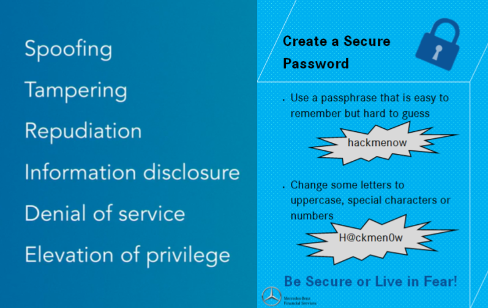

My Experience
I learned about threat modeling and how to use the STRIDE model. Each letter stands for a specific threat and you use it to classify threats. I learned that education and awareness is a big part of IT security because everyone has to understand how to protect themselves from hackers. We made a poster explaining how to make a secure password.


I also learned about Vulnerability Management and what steps they take to get rid of vulnerabilities in applications.
I learned about different ciphers (substitution, transposition, Vigenere cipher, and Caesar cipher) used to encrypt data. Data is encrypted and stored encrypted so that if it gets stolen, the hackers can't use the data.